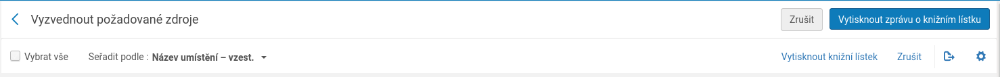
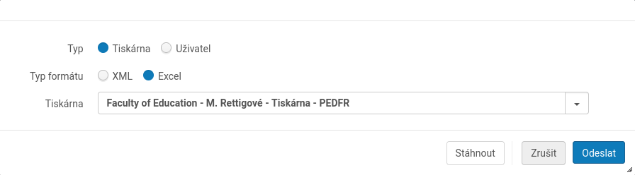

Do tohoto formuláře zkopírujte obsah excelovského
V Almě, v horní liště vyberte Úkoly vyžadující vaší pozornost (zápisníček s fajfkou). Tam zvolte Vyzvednutí z police. Vpravo nahoře je tlačítko Vytisknout zprávu o knižním lístku. To zmáčkněte.

Ve formuláři, který se objeví, musíte zvolit: Typ = Tiskárna, Typ formátu = Excel, Tiskárna = PedF Rettigové, nebo PedF Celetná. Pak klikněte na stáhnout.

Otevřete exelovský soubor a zkopírujte jeho celý obsah do tohoto formuláře a klikněte na Vytvořit PDF
Více informací o rezervacích je na wiki stránkách Almy.